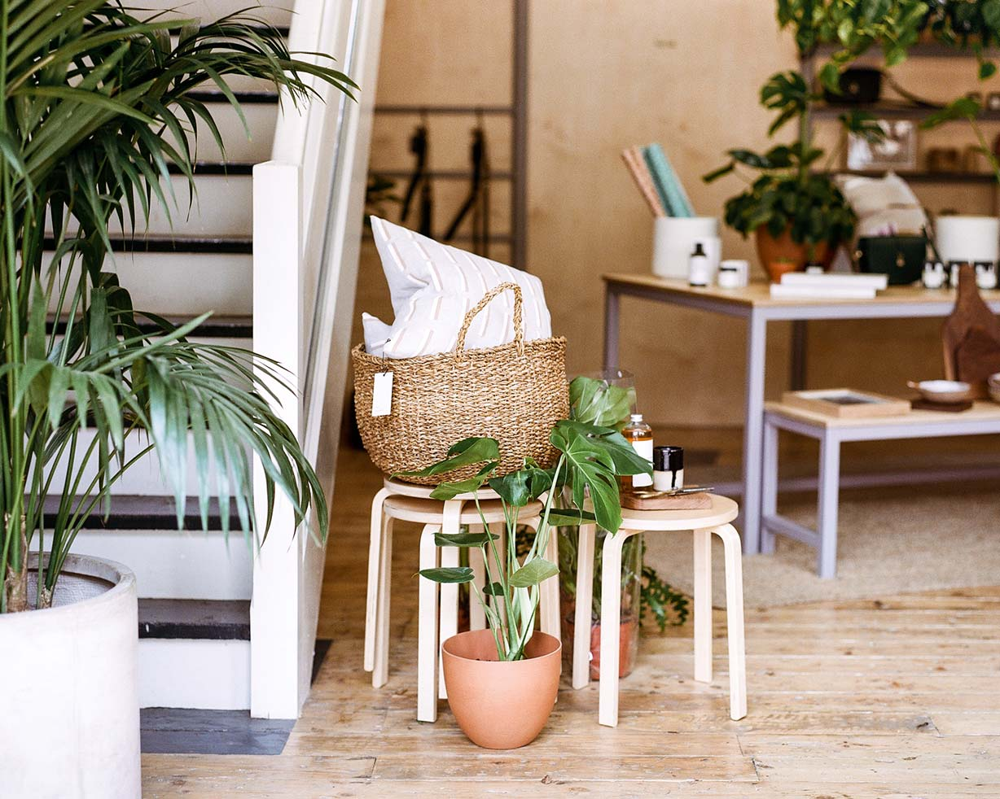

Earl of East
NIKO DAFKOS & PAUL FIRMIN ENTREPRENEUR

With a mix of curated goods, candle pouring, coffee, and workshops open to the community, Earl of East London is an aromatic invitation to all the senses.
What are your backgrounds?
Paul: My background is in digital media sales, I’ve been in that industry a long time, so Earl of East London is a bit of a different beast.
Niko: I come from a media background too. I’m a social producer & love my role. I feel like both, my agency job and Earl of East London compliment each other so well. I take knowledge from one and plug it into the other and vice versa.
How did Earl of East London begin?
Paul: Earl of East is a passion project for Niko and I, the name though is actually a moniker given to me in one of my first jobs in London. I was always trying to persuade my colleagues to spend their weekends in my neighbourhood, it just kind of stuck so when I left the job I set up a Twitter account and a Tumblr page.
Niko: I always say there were three things that came together that made us take the step to make Earl of East London happen. Firstly, we were bored of being on the outside we wanted to be part of the community. At the time we used to visit every market and go to every new coffee shop and bar but we felt like we were customers rather than insiders or enablers. Secondly, we were bored of just consuming in the community, we wanted to share our interests with others. Netil Market was a great platform for us. Thirdly, Paul’s father had just passed away so instead of dwelling on that, we thought it would be best to filter that energy and turn it into something positive.
Your partnership is central to your brand, as well as your personal memories incorporated into each signature scent you’ve developed together. How has your partnership marked the way you run your business?
Paul: It’s funny because the first question we get from people is how do you find working together. For us it’s second nature, some couples like drinking together we like building a future by creating a business or brand that encapsulates our interests. Collaboration is vital to making any business grow and that’s much easier as partners in everything. You can say what needs to be said and ultimately our agenda and goal is the same.
Niko: I’m a strong believer in teamwork and communication; I grew up in a Greek family and for the most part never knew life any other way, than being in it together. We started Earl of East London in our second year of being a couple and used scent to get to know each other even more and become a true partnership. We both bring different qualities to the business, which help us keep each other in line and focused and whilst being able to work positively towards the same end goal.
Tell us about each of your favorite scents and the story behind them.
Paul: Favourite scent is a tricky one. I always tend to say the newest because its the most exciting for us at the point. In which case our new scents inspired by Japanese Healing Culture are the ones. It would always be hard not to include Smoke & Musk though; it’s our first scent and the one that put us on the map. It was inspired by an amazing trip to Big Bear where we attended Unique Camp. It continues to be a best seller.
Niko: Favourite scent is hard as it depends so much on the mood that I’m in and the time of year. At the moment, we’re in Los Angeles and I absolutely love burning Strand – our scent inspired by Copenhagen. It works so well here with the light and the weather.
What’s next for you both and Earl of East London?
Paul: We have big ambitions for the next few years, but who knows if it will go to plan. We want to grow the brand in to areas that people wouldn’t predict but above everything we want it to continue to be fun for us and our team. For us, well we want to try and have a little more time downtime.
Niko: : We are growing the team and tapping into areas that seem to be really exciting, but we also need to address our work-life-integration a little.